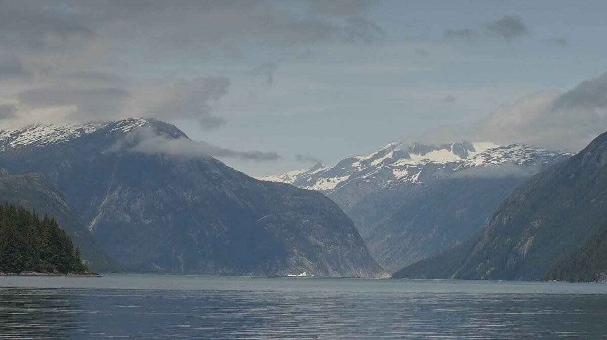
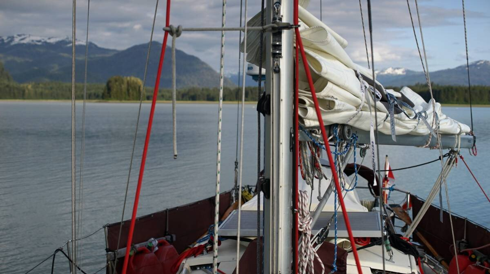

ruth island cove

On June 17th, we let go of the dock in Petersburg and made our way of the channel and into Frederick Sound. The wind was forecast to be light that day, but it's rare that there is nothing. We raised Pino's main, and surely enough, we had a very light breeze to help us along, at least until we reached Sukoi Islets.
Before we reached the Sukoi Islets, we caught a glimpse of our very first glacier, tucked between two mountains and rising high above the water side hills. It was too far to photograph, but we could observe it well enough with binoculars. There is something deeply hypnotic about glaciers, a reminder of a time now past. Many glaciers are now receding, they leave beautiful formations behind, but few in the area lay on the water. With augmented eyes, we could see spikes in the glacier. This wondrous sight disappeared once we passed the islets.
Pino passed a tug with a barge in tow, and a few other fishing and cruising boats. Another sailboat, a rare bird in these parts, was pointing towards Thomas Bay too. They could motor faster, they got to the entrance 1 hour before we did. We observed their movements on ais, to try and find out if there was current in the pass. The pass to Thomas Bay is restricted, a lot of water must exit through this point. We noticed that their motoring speed of 7 knots was reduced to a painful 2.1 knots. "Hmmm..." we both said aloud, "not sure we'll be able to get in." We figured we'd go see for ourselves, it's possible the boat had slowed for other reasons...
Our main and headsail was up, some light winds added 1 knot to our speed and stayed with us through the pass. Our speed initially was 5 knots, it only decreased to 3.4 knots, not too bad. The sailboat continued into the north arm, bound for Scenery Cove, while we turned east and then south to Ruth Island Cove. The current stopped messing with our speed once we were well-clear of the pass. When entering, it felt like we were in the South Pacific again, entering an atoll. There were sand beaches on one side, hidden reefs everywhere, sunny skies... the coniferous trees and snow on the mountains quickly dispelled that reverie.
It is a long way around Ruth island, the pass to the south would bring us there quicker, if it wasn't for the strong likehood of a grounding. A grounding would slow our progress to the anchorage. The long way is beautiful. Even if we didn't enter the north arm towards what remains of Baird Glacier, we could see some ice stranded on land, as well as part of the receding glacier.
{kind=link}
"Baird Glacier has a large glacial outwash plain and terminal moraine in front of the ice which supports a diversity of plant and animal life."
The water here is, again, a striking jade color. The water is so opaque, so clouded, that there is no visibility. The mountains here are very tall, and the ones behind the ones bordering the water, even more so. The tall mountains all have snow on their peaks, we can see many from where we are.
When nearing Ruth Island Cove, we noticed many crab traps were set in the water. Many, close to 50. The water was flat, it was easy to see them, but we couldn't believe how many traps there were... it was like the bay was full of floating garbage. Crabbing season in southeast Alaska begins after June 15th, we had heard this, but didn't think that this bay was a hotspot. We made our way through the traps, hoping to find a spot amongst them... we did, but some of the traps were laying close still.
"Maybe they'll come and get them tomorrow and free up some space," I said, but my grin turned sour, "or maybe they'll come and lay more down."
The bay is still lovely despite the crab trap minefield, but it does limit anchoring, we're not certain anyone else could find room in here today. Maybe the locals know that traps are laid here en masse... maybe they avoid it for that reason, maybe that's why no one else is here. We know when to harvest vegetables and fruit on land, but we know nothing about fishing. Our guidebooks didn't mention this, but it's possible that their time here was in the 90's(they haven't dated their visits), although fishing and crabbing has been the lifeblood of this region for a long, long time. On the second day, we did see many small boats come and mess with the traps, we didn't pay too much attention, maybe they removed some, maybe there's more, hard to say... the one at our stern was left alone.

The bay here is not too deep for anchoring, making it almost ideal... almost. We dropped the hook in 30 feet, 40 feet at high tide. Reasonable. Because it was warm on the two days we were here, we got some outflow winds from Baird Glacier, but Ruth Island shielded us well enough.
Unfortunately, there was many horseflies here, making it difficult to want to be outside. When laying the anchor Devine had to come and keep them off of me. In the morning, there was also those little flies that fly near your face and eyes, well aware that it is the very best way to annoy us. "This is how we will defeat them," they said to each other, "we will fly into their eyes, their mouths and ears... yes, they will hate us for it. Some of us may die, but their patience is short, soon, they will retreat to the safety of their floating fortresses. The wilderness will again, be ours!" The horseflies are the tanks, there are fewer, but they hit hard, the tiny flies are the foot soldiers, they triumph because there are many.
Devine went for a dinghy ride to the south anchorage, and found a large rusty barge moored there. When we arrived into the anchorage we saw a small skiff pulling a house out of the bay, we wonder now if it was once moored here.

Due to light winds in Frederick Sound, we stayed here for 4 days. I did a lot of solar cooking while here, because the sun was with us the whole time too. I cooked seitan, potatoes, brown rice, split green peas and made some okonomiyaki! For the okonomiyaki, I made a chickpea flour and water mix with some chopped cabbage, spooned it in the tray of the cooker and cooked it for an hour and a half. It cooked fine, I then warmed the sauce and cut some green onions and threw it all overtop. It was very, very delicious.